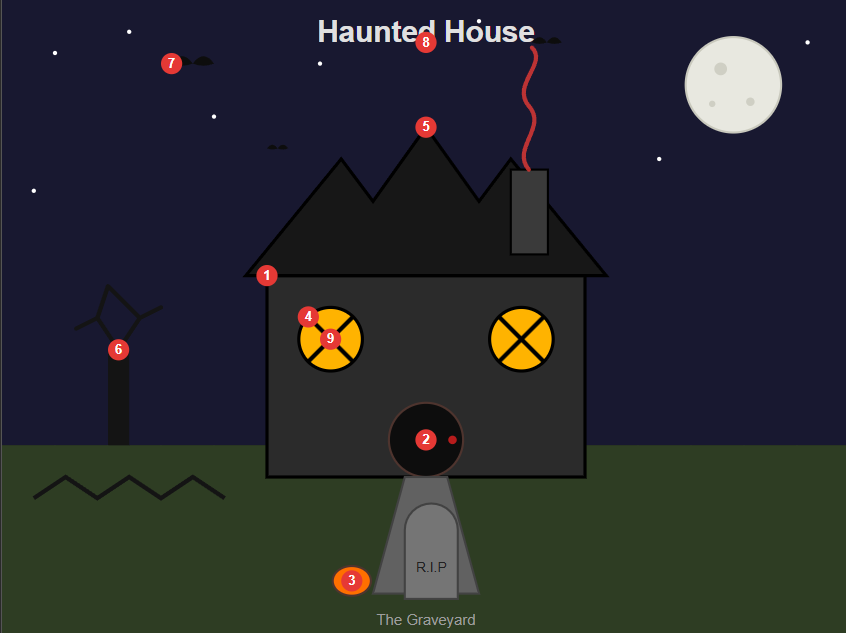

COS30045 Data Visualisation — Haunted House theme
Built with HTML/SVG. Used a GenAI tool (Claude) to draft the initial SVG shape code, then customised it into a haunted-house theme: dark night sky, moon and stars, a jagged roof, a round door, boarded-up X windows, bats, a dead tree, a single tombstone and a jack-o-lantern.
